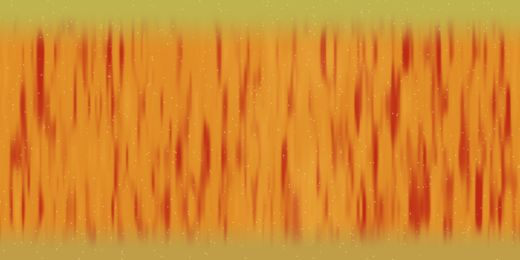

Foundations
Everything the projects use, explained once. Read this part with Blender open and try each shortcut as you go.
1.1 The interface
Open Blender and choose General on the splash screen. You land in the Layout workspace. A workspace is a saved arrangement of editors. The tabs along the top (Layout, Modeling, Shading, Animation and so on) switch between arrangements, and the scene stays the same.
- 3D Viewport: your window into the scene. The four round buttons at its top right switch the shading: Wireframe, Solid, Material Preview (shows materials) and Rendered (a live preview of the final image). Z opens the same choices as a pie menu.
- Outliner: a list of everything in the scene. Click a name to select it, double-click to rename. The eye icon hides an object in the viewport; the camera icon hides it from renders. If you don't see the camera icon, open the Outliner's Filter menu (funnel icon) and turn it on.
- Properties editor: the settings for the scene and the selected object, organised into tabs. You will live in the Render, Output, World, Object, Modifiers, Physics, Data and Material tabs.
- Timeline: frames over time, for animation and simulation.
- Sidebar (N over the viewport): the Item tab shows exact Location, Rotation, Scale and Dimensions. You'll type most of this guide's numbers here.
- Adjust Last Operation: the small panel at the bottom-left of the viewport right after you add or change something. It lets you change the settings of that action (number of segments, radius…). It disappears as soon as you do something else, so set it straight away. F9 brings it back as a popup.
1.2 Moving around the viewport
| Do this | Mouse / key |
|---|---|
| Orbit around the scene | Drag with the middle mouse button (wheel click) |
| Pan (slide the view) | Shift + middle-drag |
| Zoom | Scroll wheel, or Ctrl + middle-drag |
| Front / Right / Top view | Numpad 1 / 3 / 7 (add Ctrl for the opposite side) |
| Look through the active camera | Numpad 0 |
| Toggle perspective / orthographic | Numpad 5 |
| Zoom to the selected object | Numpad . (period) |
| Show everything | Home |
| View pie menu (all of the above) | ` (the key left of 1) |
| Focus on one object only (local view) | Numpad /, press again to return |
1.3 3D space, units and the 3D cursor
- Axes. X is red (left–right), Y is green (front–back), Z is blue and points up. The grid floor is the X–Y plane at Z = 0. In your scenes, the court floor and the top of the kitchen table both sit at Z = 0.
- Units. One Blender unit is one metre (Scene tab › Units: Metric, Unit Scale 1.0). All the projects use real sizes: the rim is 3.05 m off the floor, the ball is 24 cm across, an apple is about 8 cm. (The warmobile in Part 5 switches the scene to feet to match its blueprint.) Real sizes matter because lights, depth of field and cloth simulation all behave physically.
- Origin. The small orange dot on a selected object is its origin, the point it rotates and scales around.
- 3D cursor. The red-and-white circle. New objects appear where it is. Shift+right-click places it; Shift+C puts it back at the world centre (0, 0, 0). Shift+S opens a snap menu (for example "Cursor to Selected").
1.4 Objects, data and collections
Every thing in a scene is an object. An object has a position, rotation and scale, and it holds some data: a mesh (a 3D shape), a light, a camera or a curve. The difference matters: two objects can share the same mesh data, and editing that mesh changes both.
- Select: left-click. Shift+click adds to the selection. The last one clicked is the active object (bright orange outline); many commands use it. A selects everything, Alt+A deselects.
- Rename: F2, or double-click in the Outliner. Name things as you go (
Hoop_North_Pole, notCylinder.004). Your files use names like this throughout, and they keep the Outliner readable. - Duplicate: Shift+D makes an independent copy and starts moving it (right-click to drop it in place). Alt+D makes a linked copy that shares the mesh.
- Delete: X › Delete. Hide: H, unhide all: Alt+H.
- Collections are folders in the Outliner. Select objects, press M and pick or create a collection. Your court file groups things like this: Basketball Court › Court, Ball, Hoop_North, Hoop_South, plus Arena Lights.
- Parenting makes one object follow another. Select the children first, the parent last (so it's active), then Ctrl+P › Object (Keep Transform). Move the parent and the children come along. Alt+P clears it.
- Empties are objects with no shape, drawn as little axes or spheres. They never render. Your scenes use them as a handle for a whole hoop and as focus targets for cameras. Add › Empty › Plain Axes.
1.5 Move, rotate, scale
The three basic transforms each have one key. Press the key, move the mouse, click to confirm (right-click or Esc cancels).
| Key | Does | Example you'll type |
|---|---|---|
| G | Grab (move) | G Z 0.12 Enter moves up 12 cm |
| R | Rotate | R X 90 Enter lays a cylinder on its side |
| S | Scale | S 0.5 Enter halves the size |
| X / Y / Z after G, R or S | Lock to one axis | S Shift+Z scales in X and Y but not Z |
| Alt+G / R / S | Reset location / rotation / scale |
For exact values, open the Sidebar (N) and type into Location, Rotation, Scale or Dimensions. You can type maths too: 0.45/2 works in any number field. Dimensions sets the actual size in metres and changes Scale to get there.
The pivot point (period key . pie menu in the viewport) decides what you rotate and scale around. "3D Cursor" is useful for swinging a copy of something around the centre of the court.
1.6 Meshes and Edit Mode
A mesh is a surface made of three things: vertices (points), edges (lines between two points) and faces (filled polygons, usually four-sided "quads"). Each face has a front side; the direction it faces is its normal. Light, thickness and displacement all use normals.
Press Tab to switch between Object Mode (move whole objects) and Edit Mode (move the points of one mesh). In Edit Mode:
| Key | Does | Used in |
|---|---|---|
| 1 2 3 | Select vertices / edges / faces | everywhere |
| Alt+click | Select a whole edge loop (a ring around a cylinder or sphere) | net, fruit shapes |
| B / C | Box select / paint select | pin groups |
| E | Extrude: pull new geometry out of the selection | plate profile |
| I | Inset a face (a smaller face inside it) | backboard target square |
| Ctrl+R | Loop cut: add rings across a shape (scroll for more cuts) | hoop net |
| M | Merge selected points (At Center, At Last…) | plate profile |
| Ctrl+right-click | Extrude the selected vertex to the mouse | plate profile |
| O | Proportional editing: moving one point drags its neighbours smoothly (scroll to change the radius) | apple dimples, pear necks |
| X | Delete vertices, edges or faces | target square |
| Ctrl+J (Object Mode) | Join several objects into one | bench frame |
Smooth shading. In Object Mode, right-click › Shade Smooth makes faceted surfaces look smooth by blending the normals. It doesn't change the shape. Use it on round things (ball, rim, fruit, cloth), not on boxes.
1.7 Primitives and their settings
Every object in the first three projects starts as one of Blender's ready-made shapes (the warmobile starts as one cube), added with Shift+A. Their settings live in the Adjust Last Operation panel, so change them right after adding.
| Primitive | Key settings | Becomes |
|---|---|---|
| Plane | Size | court floor, arena floor, the target square |
| Cube | Size | backboard, pole base, bracket, bench seat and frame |
| Cylinder | Vertices, Radius, Depth, Cap Fill Type | pole, arm, net, round table, arena wall, kitchen wall |
| UV Sphere | Segments (around), Rings (top to bottom), Radius | the ball and every fruit |
| Torus | Major / Minor Segments, Major / Minor Radius | the rim |
| Grid | X / Y Subdivisions, Size | towels and pennants (cloth needs many points) |
| Bezier curve | (edited by its points) | fruit stems |
| Empty | Display type | hoop handles, camera focus targets |
Leave Generate UVs ticked in that panel. It gives the shape a ready-made UV map, which every textured object in these projects relies on (see 1.11).
1.8 Modifiers
A modifier changes how an object looks without touching its mesh. You can tweak or remove it at any time. Add them in the Modifiers tab (blue wrench) › Add Modifier. They run as a stack from top to bottom, and order matters: each one works on the result of the one above.
| Modifier | Menu | What it does | Used for |
|---|---|---|---|
| Subdivision Surface | Generate | Splits every face and rounds the shape. Levels Viewport (while working) and Render (final image) are separate. | fruit, cloth, plates |
| Displace | Deform | Pushes vertices along their normals using a texture: small lumps and wrinkles. | fruit lumps, cloth wrinkles |
| Solidify | Generate | Gives a paper-thin surface real thickness. | towels, pennants |
| Bevel | Generate | Rounds sharp edges so they catch light. | bench seat, table edge |
| Wireframe | Generate | Turns every edge into a thin solid strand. | basketball net |
| Screw | Generate | Spins a profile line around an axis, like a potter's wheel or lathe. | glass plates |
| Weighted Normal | Normals | Cleans up shading on shapes with big flat areas. | glass plates |
| Cloth | (Physics tab) | Simulates fabric. Added from the Physics tab, shows up in the stack. | towels, pennants |
Each modifier's header has a small dropdown arrow with Apply, which makes the result permanent (Ctrl+A with the mouse over it does the same). You'll do this once, to freeze cloth into its draped shape.
1.9 Curves
A curve is a smooth line defined by a few control points with handles. Add › Curve › Bezier gives you one with two points. In Edit Mode, drag the points and their handles; E extrudes a new point from an end. In the curve's Data tab (green curve icon) › Geometry › Bevel › Depth, a curve gets a round thickness and becomes a tube. Tick Fill Caps to close its ends. All the fruit stems are bevelled Bezier curves with three points.
1.10 Materials and shader nodes
A material decides how a surface reacts to light: its colour, shininess, transparency and fine bumps. In the Material tab press New. You get a Principled BSDF, a single all-purpose surface that copies how real materials behave. Its most important inputs:
| Input | Meaning | Values from your scenes |
|---|---|---|
| Base Color | The surface colour, or an image | court photo, towel artwork, fruit skins |
| Metallic | 0 for everything except bare metal | pole 0.8, rim 0.7, bench frame 0.9 |
| Roughness | 0 is a mirror, 1 is chalk | glass 0, varnished floor 0.35, towel 0.95, felt 1.0 |
| IOR · Transmission | Light passing through; Transmission 1 makes glass | plates: IOR 1.52, Transmission 1 |
| Coat | A clear varnish layer on top | court floor 0.4, cherries 0.6, apples 0.35 |
| Sheen | Soft glow at grazing angles, like fuzz or fabric | towels 0.3, felt 0.2, kiwi fuzz 0.6 |
| Subsurface | Light entering the surface and scattering inside | fruit skins 0.02–0.15 |
| Emission | The surface gives off its own light | arena crowd and kitchen photo walls |
| Normal | Fake bumps that catch light without changing the shape | felt fibres, orange pores, wood grain |
Materials are really small programs drawn as nodes. Switch to the Shading workspace (tab at the top): the viewport shows Material Preview and the Shader Editor sits underneath. Data flows left to right through wires:
Socket colours tell you what kind of data flows: yellow is colour, grey is a single number, purple is a vector (a direction or position), green is a finished surface. How to work with nodes:
- Shift+A over the Shader Editor adds a node. Start typing the node's name to search for it; every node in this guide can be found this way.
- Drag from an output socket (right side) to an input socket (left side) to connect. Ctrl+right-drag across a wire cuts it.
- Quick image: click the small dot to the left of Base Color in the Material tab and choose Image Texture, then Open.
- Color Space on an Image Texture node: sRGB for pictures you look at, Non-Color for "data" images like height maps and masks. Getting this wrong makes bumps too strong or masks too soft.
The nodes used across the projects:
| Node | What it gives you |
|---|---|
| Texture Coordinate | Where each point is. UV follows the UV map; Object is the 3D position on the object (great for noise that never stretches); Generated is 0–1 across the object's bounding box. |
| Mapping | Moves, rotates or scales those coordinates (repeat a texture, shift an image). |
| Image Texture | Reads a picture file. |
| Noise Texture | Cloudy random values; Scale sets how fine. |
| Voronoi Texture | Cells. Gives dots (towel loops), pores (orange peel) or a net (Distance to Edge, melon netting). |
| Wave Texture | Bands or rings; distorted bands look like wood grain. |
| Map Range | Squeezes one range of values into another (noise 0.3–0.7 becomes roughness 0.24–0.375). |
| Math · Mix (Color) | Add, multiply, blend values or colours. |
| Separate Color · Separate XYZ | Split an image into its red, green, blue channels, or a position into X, Y, Z. |
| Color Ramp | Turns a 0–1 value into a gradient of colours. |
| Bump | Turns a grey height into surface detail for the Normal input. Chain Bumps by feeding one's Normal output into the next one's Normal input. |
| Mix Shader | Blends two complete surfaces (clear and frosted glass) by a factor. |
| Emission · Background | Surfaces and skies that give off light. |
1.11 UV maps
To put a flat picture on a 3D shape, Blender needs to know which part of the picture lands on which part of the surface. A UV map is that answer: the surface unfolded flat, like a map of the Earth. U and V are just the names of the picture's horizontal and vertical axes.
You won't need to unwrap anything by hand. The primitives come with good UV maps:
- Plane and Grid: the whole picture covers the whole surface. That's why the court floor shows the court picture exactly, and each towel shows its whole design.
- UV Sphere: the picture wraps around like a world map. The left and right edges meet at a seam, and the top and bottom rows squeeze into the poles. That's why your fruit textures are twice as wide as they are tall, with stem-coloured bands along the top and bottom edges.
- Cylinder: the picture wraps once around the side. Your arena and kitchen walls use this to show a panorama photo.

To look at a UV map, open the UV Editing workspace and select the object in Edit Mode. For your own models later: U › Smart UV Project or Unwrap creates a new map.
1.12 Lighting
| Light | Behaves like | Where you use it |
|---|---|---|
| Area | A glowing panel. Bigger panel means softer shadows. Power in watts. | almost every light in all four scenes |
| Sun | Parallel light from far away; only its angle matters. | a helper in the court file, hidden from render |
| Point · Spot | A bulb · a bulb with a cone | not used here |
| World | The sky surrounding everything; adds soft ambient light | dark gradient (court), warm fill (fruit) |
Add one with Add › Light › Area. Its settings are in the light's Data tab (green bulb icon): Power, Color, Shape (Rectangle, Square, Disk) and Size. An area light shines out of its front face; with rotation (0, 0, 0) it points straight down.
The benches and fruit table both use three-point lighting, the classic studio setup:
- Key: the main, strongest light, to one side of the camera and above. Slightly warm.
- Fill: a weaker light on the other side that lifts the shadows. Slightly cool.
- Rim (back light): behind the subject, so a bright edge separates it from the background.
- Your scenes add a fourth, a top disk light for a soft overhead glow.
To aim a light, rotate it (R), type the rotation from this guide, or drag the yellow dot of its direction gizmo in the viewport.
1.13 Cameras
- Add › Camera. Numpad 0 looks through the active camera.
- Two ways to frame a shot: type its Location and Rotation (this guide gives you all of them), or navigate the viewport to a view you like and press Ctrl+Alt+Numpad 0 to move the camera there. You can also open the Sidebar's View tab and tick Camera to View, so that moving the view moves the camera.
- With several cameras, select one and press Ctrl+Numpad 0 to make it the active one. Renders always come from the active camera.
- Focal Length (camera Data tab): 22–28 mm is wide (lots of room, strong perspective), 35 mm is natural, 55 mm is tight and flattering for close-ups. Your fruit close-ups all use 55 mm.
- Depth of Field (same tab): tick it, set Focus on Object to an empty placed where you want sharpness, and set the F-Stop. A smaller F-stop number means more background blur: f/2.8 for close-ups, f/8 for overviews where everything should be sharp.
- Clip Start: the nearest distance the camera can see. For tiny subjects like fruit, lower it (0.02 m) so close objects aren't cut off.
1.14 Rendering
Rendering turns the scene into a final image. In the Render tab choose a Render Engine:
- EEVEE: fast, close to real time, good for previews. Your first basketball video and the v4 bench renders used it.
- Cycles: traces the paths of light rays. Slower, but accurate glass, soft shadows and light bouncing. All final renders in these projects use Cycles.
Cycles settings you'll set in every project (Render tab):
- Device: GPU Compute. Turn on your graphics card first in Edit › Preferences › System › Cycles Render Devices (OptiX or CUDA for NVIDIA, HIP for AMD, oneAPI for Intel).
- Sampling › Render: Noise Threshold and Max Samples. More samples means less grain and more time. Denoise on, with OpenImageDenoise, cleans what's left.
- Light Paths › Max Bounces › Total: how many times light may bounce. Glass needs more (your fruit scene uses 16).
- Color Management (bottom of the Render tab): View Transform AgX handles bright lights gracefully, Look: Punchy adds contrast and saturation, and Exposure brightens or darkens the whole image in camera stops. All four projects use AgX with Punchy and an exposure between −0.4 and 0.
Image size is in the Output tab: 1920 × 1080, 100%. Press F12 to render a still, then in the render window use Image › Save As (Shift+Alt+S). Ctrl+F12 renders the whole animation.
1.15 Animation
- Animation is a series of frames. The Output tab sets the Frame Rate (your court uses 24 fps); the Timeline sets Start and End.
- A keyframe records a value at a frame. You set a few keyframes and Blender fills in the frames between them.
- To key the location: go to a frame, set the Location in the Sidebar, hover the mouse over the Location fields and press I. The fields turn yellow (keyed on this frame) or green (animated, but not keyed here). Diamonds appear in the Timeline.
- How Blender fills the gap is the interpolation. Change the bottom editor to the Graph Editor to see the motion as curves. Select keys and press T to pick Linear, Bezier, Quadratic and others; Ctrl+E sets the easing (Ease In, Ease Out).
- Space plays and pauses. Shift+← jumps to the first frame.
1.16 Files and good habits
- Save often with Ctrl+S. Every save keeps the previous version as a
.blend1file. That's why each project folder has bothbasketball_court.blendandbasketball_court.blend1. If a save goes wrong, rename the .blend1 to .blend to get it back. - Keep textures next to the file, in the project's assets/textures folder, exactly like your projects. Blender stores the path relative to the .blend file (it starts with
//), so the project still works when you move or copy the whole folder. - Pink surfaces mean Blender can't find an image. Use File › External Data › Find Missing Files and point it at the textures folder.
- Organise with collections and names from the start. Your three files follow the same pattern: one collection per part of the scene (court, benches, lights, cameras).